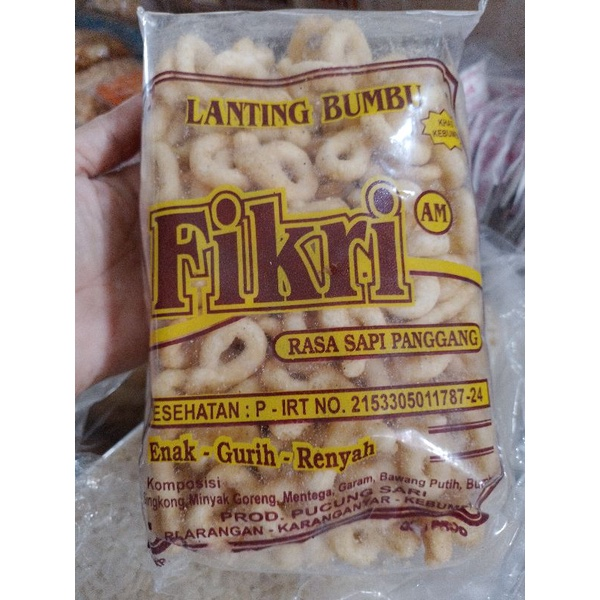

Varian Rasa Terfavorit

Bawang
Rasa klasik dengan aroma bawang putih yang kuat dan gurih.
Rp 5.000
Sapi Panggang
Perpaduan gurih dan rasa sapi panggang yang nagih.
Rp 5.000
Keju
Taburan keju premium yang gurih di mulut.
Rp 5.000